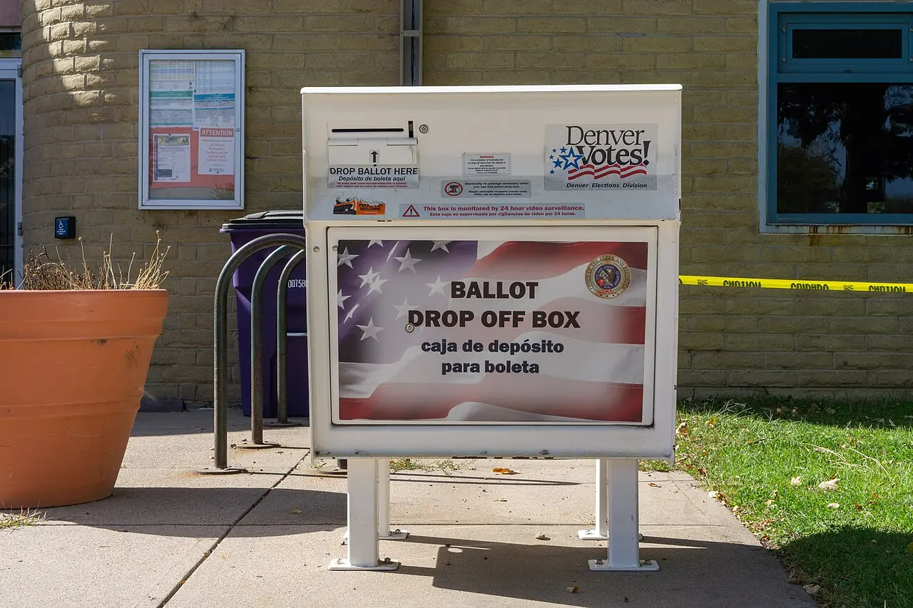

사전투표는 유권자에게 시간을 돌려주는 제도입니다. 선거일에 일하거나, 이동이 어렵거나, 일정이 겹치는 사람도 미리 투표할 수 있습니다. 참여의 문턱을 낮춘다는 점에서 사전투표는 민주주의의 편의 장치입니다. 하지만 편의가 커질수록 절차에 대한 설명도 더 자세해야 합니다. 투표가 쉬워지는 만큼 결과를 믿을 수 있는 이유도 쉬운 말로 보여줘야 합니다.
선거 신뢰는 특정 진영의 문제가 아닙니다. 이긴 쪽도 다음 선거에서는 질 수 있고, 진 쪽도 절차를 믿어야 다시 참여합니다. 그래서 사전투표 논쟁을 다룰 때 핵심은 유불리가 아니라 확인 가능성입니다. 투표지가 어떻게 발급되고, 어디에 보관되고, 누가 지켜보고, 어떤 기록이 남고, 문제가 생기면 어떻게 다시 확인하는지가 분명해야 합니다.
사전투표를 둘러싼 의심은 대개 기술 자체보다 보이지 않는 구간에서 커집니다. 유권자는 투표소에서 표를 넣는 순간은 봅니다. 그러나 그 이후 보관과 이송, 개표 준비 과정은 직접 보지 못합니다. 신뢰를 만들려면 보이지 않는 구간을 기록과 참관, 공개 설명으로 보이게 만들어야 합니다.
편의는 설명을 대신하지 못합니다

사전투표의 가장 큰 장점은 접근성입니다. 전국 어디서나 투표할 수 있고, 선거일 하루에 몰리는 부담도 줄어듭니다. 유권자 입장에서는 좋은 제도입니다. 그러나 편리하다는 이유만으로 모두가 절차를 믿는 것은 아닙니다. 제도가 복잡할수록 “왜 이렇게 해도 안전한가”라는 설명이 뒤따라야 합니다.
투표지 발급 과정부터 이해하기 쉬워야 합니다. 유권자 확인, 중복 투표 방지, 투표지 출력, 봉투 처리, 관외·관내 구분 같은 절차가 기술 용어로만 설명되면 의심이 남습니다. 시민은 모든 장비의 내부 구조를 알 필요는 없지만, 자신의 투표가 한 번만 기록되고 다른 표와 섞이지 않는 이유는 이해할 수 있어야 합니다.
정치적 신뢰는 대체로 늦게 생기고 빨리 무너집니다. 작은 오류가 제도 전체의 의심으로 번지는 이유도 여기에 있습니다. 안내 문구가 부족하거나, 현장 직원마다 설명이 다르거나, 봉인 상태를 확인하기 어렵다면 사실과 무관하게 불신은 커집니다. 선거 관리는 정확해야 하고, 동시에 정확해 보이도록 설명되어야 합니다.
보관과 이송이 의심의 중심입니다
사전투표에서 가장 민감한 부분은 투표 이후입니다. 표가 투표함에 들어간 뒤 어디에 보관되는지, 누가 접근할 수 있는지, 이송 과정에서 어떤 봉인과 기록이 남는지가 신뢰의 핵심입니다. 유권자는 이 구간을 직접 지켜보기 어렵기 때문에 절차의 공개성과 기록성이 더 중요합니다.
투표함 봉인 번호, 보관 장소 출입 기록, 이송 시간, 인계자와 인수자 기록은 단순 행정 문서가 아닙니다. 의심이 제기되었을 때 제도를 방어하는 증거입니다. 기록이 촘촘할수록 논쟁은 감정에서 사실 확인으로 옮겨갈 수 있습니다. 반대로 기록은 있지만 시민이 이해하기 어렵거나 공개 범위가 모호하면 불신을 줄이기 어렵습니다.
참관 제도도 형식에 머물면 안 됩니다. 참관인은 모든 절차를 방해하지 않으면서도 핵심 지점을 볼 수 있어야 합니다. 너무 멀리 떨어져 있거나, 확인할 수 있는 정보가 제한되거나, 문제 제기 절차가 불분명하면 참관은 신뢰 장치로 작동하지 못합니다. 좋은 참관은 선거 관리자의 일을 어렵게 만드는 것이 아니라, 결과를 더 단단하게 만드는 일입니다.
개표장은 누구에게나 읽혀야 합니다
개표는 선거의 마지막 장면이지만 신뢰의 출발점이기도 합니다. 시민이 이해할 수 없는 개표장은 의심을 키웁니다. 개표 절차, 분류기 역할, 사람이 다시 확인하는 단계, 무효표 판단 기준, 재검표 요청 방식이 명확해야 합니다. 기술 장비가 쓰일수록 사람의 확인 절차가 어디에 있는지 더 분명히 보여줘야 합니다.
선거 장비는 투명성을 낮추기보다 높이는 방향으로 설명되어야 합니다. 장비가 어떤 일을 하고 어떤 일은 하지 않는지, 결과가 사람의 확인을 거치는지, 기록지가 어떻게 남는지 알려야 합니다. “문제없다”는 말보다 “이 단계에서 이렇게 확인한다”는 설명이 더 강합니다.
개표 현장 공개도 중요합니다. 언론, 정당, 시민 참관인이 볼 수 있는 범위가 넓고, 현장 영상과 자료가 적절히 남으면 사후 논쟁이 줄어듭니다. 개표 결과를 빠르게 발표하는 것도 중요하지만, 속도보다 확인 가능성이 앞서야 합니다. 신뢰는 빠른 숫자보다 납득 가능한 절차에서 나옵니다.
불신은 반박보다 예방이 낫습니다
정당과 후보도 이 과정에서 책임이 있습니다. 선거 제도에 대한 비판은 필요할 수 있지만, 확인되지 않은 의혹을 반복하면 지지자들의 참여 의지까지 흔들 수 있습니다. 제도를 감시하려면 구체적인 절차와 자료를 요구해야 합니다. 막연한 불신보다 기록 공개, 참관 범위, 오류 처리 기준을 따지는 방식이 선거를 더 건강하게 만듭니다.
언론의 역할도 큽니다. 선거일 직전에는 자극적인 의혹보다 실제 절차를 설명하는 보도가 더 필요합니다. 투표함 봉인, 투표지 분류, 개표 참관 같은 단어가 낯설지 않아야 시민이 선거 뉴스를 차분하게 볼 수 있습니다. 민주주의의 신뢰는 큰 구호보다 반복해서 이해되는 절차 설명에서 자랍니다.
기술을 더 쓰는 것도 답이 될 수 있지만, 기술만으로 신뢰가 생기지는 않습니다. 시민이 이해할 수 있는 언어, 현장에서 확인할 수 있는 표식, 나중에 대조할 수 있는 기록이 함께 있어야 합니다. 선거 제도의 강함은 복잡한 장비보다 의심이 생겼을 때 차분히 되짚을 수 있는 절차에서 확인됩니다.
관련 영상
올바른 참정권 행사를 위한 선거정보 바로알기 사전투표
선거가 끝난 뒤 의혹을 반박하는 일은 어렵습니다. 이미 의심이 커진 뒤에는 어떤 설명도 진영 논쟁으로 받아들여질 수 있습니다. 그래서 사전투표 신뢰는 선거 전에 만들어야 합니다. 투표소 안내, 절차 영상, 참관 매뉴얼, 기록 공개 기준, 오류 발생 시 대응 원칙을 미리 알려야 합니다.
오류가 전혀 없는 제도는 없습니다. 중요한 것은 오류가 생겼을 때 숨기지 않고, 규모를 확인하고, 결과에 영향을 주는지 검증하는 체계입니다. 작은 실수를 인정하고 바로잡는 태도는 제도를 약하게 만들지 않습니다. 오히려 모든 것을 완벽하다고만 말하는 방식이 더 큰 불신을 부를 수 있습니다.
사전투표는 참여를 넓히는 제도입니다. 이 장점이 오래 유지되려면 절차가 시민의 눈높이에서 읽혀야 합니다. 투표지 발급부터 보관, 이송, 개표, 사후 검증까지 “누가 봐도 따라갈 수 있는 길”을 만드는 것이 핵심입니다. 선거 신뢰는 결과를 좋아하는 마음이 아니라, 결과가 만들어진 과정을 납득하는 데서 시작됩니다.